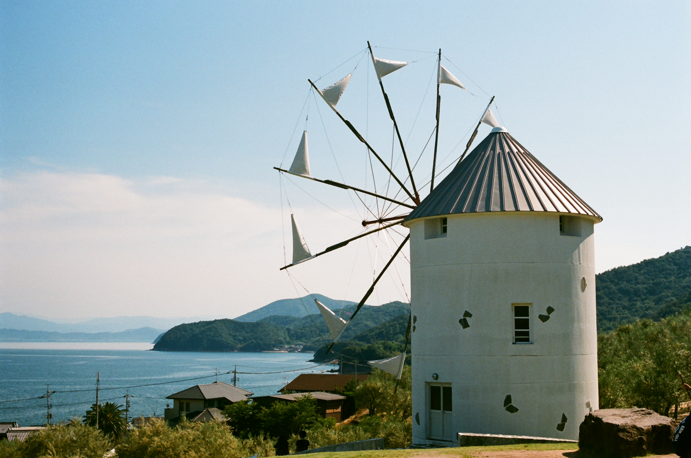
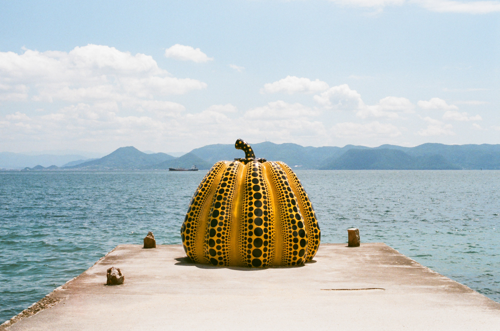
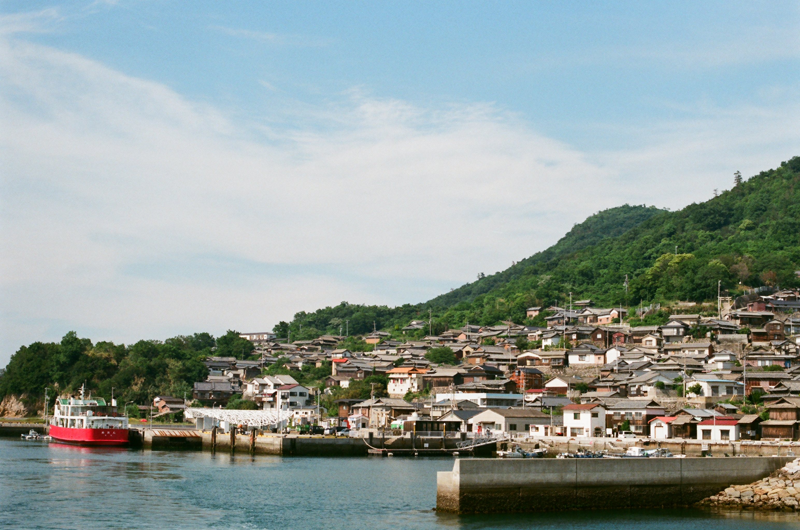

香川のおすすめ観光スポット紹介！
「オリーブの島」― 小豆島
日本で初めてオリーブの栽培に成功し、「オリーブの島」として知られる小豆島。瀬戸内海で2番目に大きく、自然と文化が調和した風光明媚な島。...
草間彌生の「かぼちゃ」に会いに行こう！ ― 直島
様々な美術館やアート作品が点在する、魅力いっぱいの「直島」。
アートな空間を楽しめる美術館のカフェやのんびりくつろげる古民家カフェなど、直島には旅の目的地にしたくなるような素敵なカフェもたくさんあります。...
アートに猫、絶景に癒される ― 男木島
迷路のように入り組んだ坂道に建つ家々が独特の景観を生み出す男木島。島のどこから見た景色も美しいと言われるビュースポットの宝庫です。...